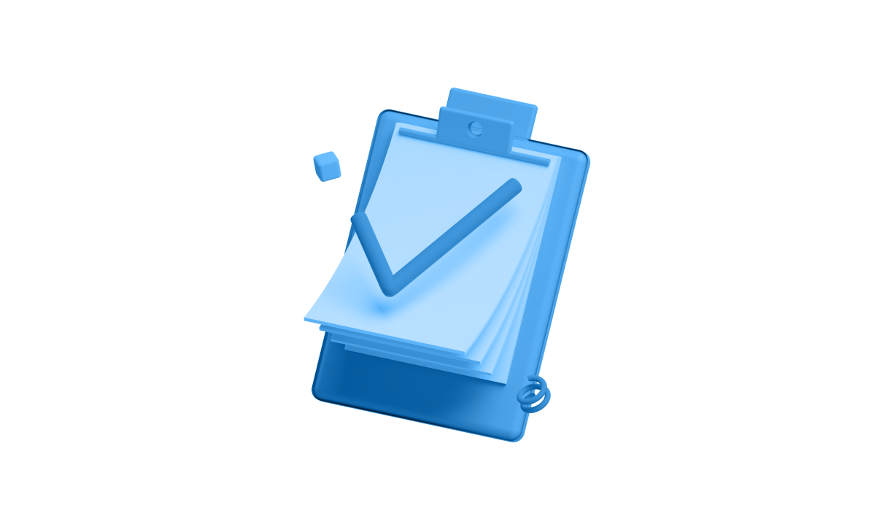
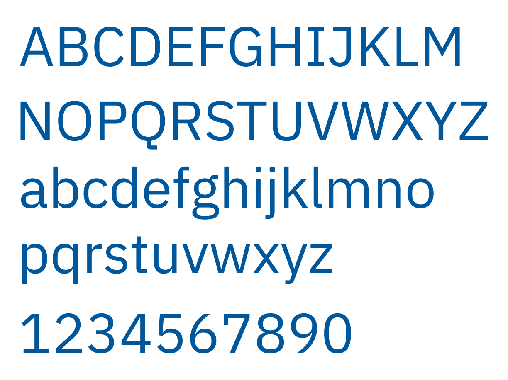

Visual design
The visual language is friendly, reassuring, simple to understand and accessible. These characteristics appeal to a diverse set of students, from cognitive disabilities to colour-blindness, to those with visual impairments.
The tone of voice is calming and measuring, whilst also reflecting some language that younger users may use.

Open source illustrations from Alzea Arafat.
Typeface
IBM Plex Sans is used as it is modern, accessible, and open source. Features that increase its accessibility include:
Double story lowercase characters.
Extra details on letters a, g, l and I make the characters more distinct and prevent confusion in users.

IBM Plex sans available from Google fonts.
Colour
The colour scheme is minimal and accessible. The choice of colour was to ensure clarity and accessibility for colour-blind users.
Blue
Rgba (1, 87, 155, 1)
Off White
Rgba (244, 243, 241, 1)
White
Rgba (255, 255, 255, 1)
Black
Rgba (1, 87, 155, 1)
Grey
Rgba (0, 0, 0, 0.7)
Yellow
Rgba (254, 152, 0,1)
Red
Rgba (211, 47, 47, 1)